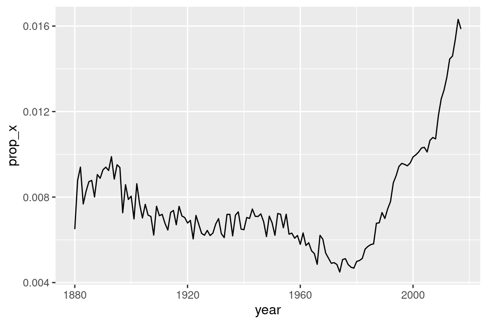

15 Λογικές εκφράσεις
15.1 Εισαγωγή
Στο Κεφάλαιο 14, μάθατε αρκετές χρήσιμες συναρτήσεις για να εργάζεστε με συμβολοσειρές. Το κεφάλαιο αυτό θα επικεντρωθεί σε συναρτήσεις που χρησιμοποιούν κανονικές εκφράσεις, μία συνοπτική και ισχυρή γλώσσα για την περιγραφή μοτίβων μέσα σε συμβολοσειρές. Ο όρος “κανονική έκφραση” είναι στα αγγλικά είναι “regular expression” και θεωρείται γλωσσοδέτης, επομένως οι περισσότεροι τον συντομεύουν σε “regex”1 ή “regexp”.
Το κεφάλαιο ξεκινά με τα βασικά των κανονικών εκφράσεων και τις πιο χρήσιμες συναρτήσεις του πακέτου stringr για ανάλυση δεδομένων. Στη συνέχεια, θα επεκτείνουμε τις γνώσεις σας σχετικά με τα μοτίβα και θα καλύψουμε επτά σημαντικά νέες θεματολογίες (διαφυγή, αγκύστρωση, κατηγορίες χαρακτήρων, κατηγορίες συντομογραφίας, ποσοτικοί δείκτες, ιεραρχία και ομαδοποίηση). Στη συνέχεια, θα μιλήσουμε για μερικούς από τους άλλους τύπους μοτίβων με τους οποίους οι συναρτήσεις του πακέτου stringr μπορούν να λειτουργήσουν και για τους διάφορους “δείκτες” που σας επιτρέπουν να τροποποιήσετε τη λειτουργία των κανονικών εκφράσεων. Θα ολοκληρώσουμε με μία επισκόπηση άλλων σημείων στο tidyverse και το βασικό σύνολο λειτουργιών της R όπου μπορείτε να χρησιμοποιήσετε regex.
15.1.1 Προαπαιτούμενα
Σε αυτό το κεφάλαιο, θα χρησιμοποιήσουμε συναρτήσεις κανονικής έκφρασης από το πακέτο stringr και το πακέτο tidyr, δύο βασικά μέλη του tidyverse, καθώς και δεδομένα από το πακέτο babynames.
Μέσα από αυτό το κεφάλαιο, θα χρησιμοποιήσουμε έναν συνδυασμό πολύ απλών παραδειγμάτων ώστε να μπορείτε να πάρετε τη βασική ιδέα, τα δεδομένα ονομάτων μωρών και τρία διανύσματα χαρακτήρων από το πακέτο stringr:
- Το διάνυσμα
fruitπεριέχει τα ονόματα 80 φρούτων. - Το
wordsπεριέχει 980 συχνές αγγλικές λέξεις. - Το
sentencesπεριέχει 720 σύντομες προτάσεις.
15.2 Βασικές αρχές των μοτίβων
Θα χρησιμοποιήσουμε την str_view() για να μάθουμε πώς λειτουργούν τα μοτίβα σε regex. Χρησιμοποιήσαμε την str_view() στο προηγούμενο κεφάλαιο για να κατανοήσουμε καλύτερα μία συμβολοσειρά έναντι της εκτυπωμένης αναπαράστασής της, και τώρα θα τη χρησιμοποιήσουμε με το δεύτερο όρισμα της, μία κανονική έκφραση. Όταν παρέχεται, η str_view() θα εμφανίσει μόνο τα στοιχεία του διανύσματος συμβολοσειράς που ταιριάζουν, περιβάλλοντας κάθε αντιστοιχία με <> και, όπου είναι δυνατόν, επισημαίνοντας την αντιστοίχιση με μπλε χρώμα.
Τα πιο απλά μοτίβα αποτελούνται από γράμματα και αριθμούς που ταιριάζουν ακριβώς με αυτούς τους χαρακτήρες:
str_view(fruit, "berry")
#> [6] │ bil<berry>
#> [7] │ black<berry>
#> [10] │ blue<berry>
#> [11] │ boysen<berry>
#> [19] │ cloud<berry>
#> [21] │ cran<berry>
#> ... and 8 moreΤα γράμματα και οι αριθμοί που ταιριάζουν ακριβώς ονομάζονται σταθεροί χαρακτήρες. Οι περισσότεροι χαρακτήρες στίξης, όπως οι ., +, *, [, ] και ?, έχουν ειδικές έννοιες2 και ονομάζονται μεταχαρακτήρες. Για παράδειγμα, ο χαρακτήρας . θα ταιριάζει με οποιονδήποτε χαρακτήρα3, οπότε το a . θα ταιριάζει με κάθε συμβολοσειρά που περιέχει ένα a ακολουθούμενο από έναν άλλο χαρακτήρα :
Ή θα μπορούσαμε να βρούμε όλα τα φρούτα που περιέχουν ένα “a”, ακολουθούμενο από τρία γράμματα και ένα “e”:
str_view(fruit, "a...e")
#> [1] │ <apple>
#> [7] │ bl<ackbe>rry
#> [48] │ mand<arine>
#> [51] │ nect<arine>
#> [62] │ pine<apple>
#> [64] │ pomegr<anate>
#> ... and 2 moreΟι ποσοτικοί δείκτες ελέγχουν πόσες φορές μπορεί να ταιριάξει ένα μοτίβο:
- Το
?κάνει ένα μοτίβο προαιρετικό (να ταιριάζει δηλαδή 0 ή 1 φορές) - Το
+επιτρέπει σε ένα μοτίβο να επαναλαμβάνεται (να ταιριάζει δηλαδή τουλάχιστον μία φορά) - Το
*επιτρέπει σε ένα μοτίβο να είναι προαιρετικό ή να επαναλαμβάνεται (να ταιριάζει δηλαδή με οποιονδήποτε αριθμό φορών, συμπεριλαμβανομένου του 0).
# Το ab? αντιστοιχίζει ένα "a", που ακολουθείται προαιρετικά από ένα "b".
str_view(c("a", "ab", "abb"), "ab?")
#> [1] │ <a>
#> [2] │ <ab>
#> [3] │ <ab>b
# Το ab+ αντιστοιχίζει ένα "a", που ακολουθείται από τουλάχιστον ένα "b"
str_view(c("a", "ab", "abb"), "ab+")
#> [2] │ <ab>
#> [3] │ <abb>
# Το ab* αντιστοιχίζει ένα "a", που ακολουθείται από οποιονδήποτε αριθμό "b" (ακόμα και 0).
str_view(c("a", "ab", "abb"), "ab*")
#> [1] │ <a>
#> [2] │ <ab>
#> [3] │ <abb>Οι κατηγορίες χαρακτήρων ορίζονται από το [] και σας επιτρέπουν να αντιστοιχίσετε ένα σύνολο χαρακτήρων. Για παράδειγμα, το [abcd] ταιριάζει με τους χαρακτήρες “a”, “b”, “c” ή “d”. Μπορείτε επίσης να αντιστρέψετε την αντιστοίχιση ξεκινώντας με το ^: Το [^abcd] αντιστοιχεί σε οτιδήποτε εκτός των “a”, “b”, “c” ή “d”. Μπορούμε να χρησιμοποιήσουμε αυτήν την ιδέα για να βρούμε τις λέξεις που περιέχουν ένα “x” που περιβάλλεται από φωνήεντα ή ένα “y” που περιβάλλεται από σύμφωνα:
Μπορείτε να χρησιμοποιήσετε την εναλλαγή, |, για να επιλέξετε ανάμεσα σε ένα ή περισσότερα εναλλακτικά μοτίβα. Για παράδειγμα, τα ακόλουθα μοτίβα αναζητούν φρούτα που περιέχουν “apple”, “melon” ή “nut” ή ένα επαναλαμβανόμενο φωνήεν.
str_view(fruit, "apple|melon|nut")
#> [1] │ <apple>
#> [13] │ canary <melon>
#> [20] │ coco<nut>
#> [52] │ <nut>
#> [62] │ pine<apple>
#> [72] │ rock <melon>
#> ... and 1 more
str_view(fruit, "aa|ee|ii|oo|uu")
#> [9] │ bl<oo>d orange
#> [33] │ g<oo>seberry
#> [47] │ lych<ee>
#> [66] │ purple mangost<ee>nΟι κανονικές εκφράσεις είναι πολύ συμπαγείς και χρησιμοποιούν πολλούς χαρακτήρες στίξης, έτσι μπορεί να φαίνονται δύσκολες και δυσανάγνωστες στην αρχή. Μην ανησυχείτε. θα γίνετε καλύτεροι με την εξάσκηση και τα απλά μοτίβα σύντομα θα γίνουν συνήθεια. Ας ξεκινήσουμε αυτή τη διαδικασία εξασκώντας μερικές χρήσιμες συναρτήσεις του πακέτου stringr.
15.3 Βασικές συναρτήσεις
Τώρα που έχετε εμπεδώσει τα βασικά των κανονικών εκφράσεων, ας τις χρησιμοποιήσουμε με ορισμένες συναρτήσεις από το πακέτο stringr και το πακέτο tidyr. Στην επόμενη ενότητα, θα μάθετε πώς να ανιχνεύετε την παρουσία ή την απουσία μιας αντιστοίχισης, πώς να μετράτε τον αριθμό των αντιστοιχιών, πώς να αντικαθιστάτε μία αντιστοίχιση με σταθερό κείμενο και πώς να εξάγετε κείμενο χρησιμοποιώντας ένα μοτίβο.
15.3.1 Ανίχνευση αντιστοιχιών
Η str_detect() επιστρέφει ένα λογικό διάνυσμα που είναι TRUE εάν το μοτίβο ταιριάζει με ένα στοιχείο του διανύσματος χαρακτήρων και FALSE σε διαφορετική περίπτωση:
str_detect(c("a", "b", "c"), "[aeiou]")
#> [1] TRUE FALSE FALSEΕφόσον η str_detect() επιστρέφει ένα λογικό διάνυσμα ίδιου μήκους με το αρχικό διάνυσμα, συνδυάζεται καλά με την filter(). Για παράδειγμα, αυτός ο κώδικας βρίσκει όλα τα πιο δημοφιλή ονόματα που περιέχουν ένα πεζό “x”:
babynames |>
filter(str_detect(name, "x")) |>
count(name, wt = n, sort = TRUE)
#> # A tibble: 974 × 2
#> name n
#> <chr> <int>
#> 1 Alexander 665492
#> 2 Alexis 399551
#> 3 Alex 278705
#> 4 Alexandra 232223
#> 5 Max 148787
#> 6 Alexa 123032
#> # ℹ 968 more rowsΜπορούμε επίσης να χρησιμοποιήσουμε την str_detect() με την summarize() συνδυάζοντάς το με την sum() ή την mean(): Το sum(str_detect(x, pattern)) σας λέει τον αριθμό των παρατηρήσεων που ταιριάζουν, και η mean(str_detect(x, pattern)) σας λέει την αναλογία που ταιριάζει. Για παράδειγμα, το ακόλουθο απόσπασμα υπολογίζει και απεικονίζει την αναλογία των ονομάτων μωρών4 που περιέχουν το γράμμα “x”, ανά έτος. Φαίνεται ότι έχουν αυξηθεί πάρα πολύ σε δημοτικότητα τον τελευταίο καιρό!
babynames |>
group_by(year) |>
summarize(prop_x = mean(str_detect(name, "x"))) |>
ggplot(aes(x = year, y = prop_x)) +
geom_line()
Υπάρχουν δύο συναρτήσεις που σχετίζονται στενά με την str_detect(): η str_subset() και η str_which(). Η str_subset() επιστρέφει ένα διάνυσμα χαρακτήρων που περιέχει μόνο τις συμβολοσειρές που ταιριάζουν. Η str_which() επιστρέφει ένα ακέραιο διάνυσμα δίνοντας τις θέσεις των συμβολοσειρών που ταιριάζουν.
15.3.2 Μετρήσεις αντιστοιχίσεων
Το επόμενο βήμα στην πολυπλοκότητα από την str_detect() είναι η str_count(): αντί να επιστρέψει κάποιο true ή false, σας λέει πόσες αντιστοιχίσεις υπάρχουν σε κάθε συμβολοσειρά.
Σημειώστε ότι κάθε αντιστοίχιση ξεκινά στο τέλος της προηγούμενης αντιστοίχισης, δηλαδή οι αντιστοιχήσεις των regex δεν επικαλύπτονται ποτέ. Για παράδειγμα, στη συμβολοσειρά "abababa", πόσες φορές θα ταιριάξει το μοτίβο "aba";
Οι κανονικές εκφράσεις λένε δύο, όχι τρεις:
Είναι αναμενόμενο να χρησιμοποιείτε την str_count() με την mutate(). Το παρακάτω παράδειγμα χρησιμοποιεί την str_count() με κατηγορίες χαρακτήρων για να μετρήσει τον αριθμό των φωνηέντων και των συμφώνων σε κάθε όνομα.
babynames |>
count(name) |>
mutate(
vowels = str_count(name, "[aeiou]"),
consonants = str_count(name, "[^aeiou]")
)
#> # A tibble: 97,310 × 4
#> name n vowels consonants
#> <chr> <int> <int> <int>
#> 1 Aaban 10 2 3
#> 2 Aabha 5 2 3
#> 3 Aabid 2 2 3
#> 4 Aabir 1 2 3
#> 5 Aabriella 5 4 5
#> 6 Aada 1 2 2
#> # ℹ 97,304 more rowsΑν κοιτάξετε προσεκτικά, θα παρατηρήσετε ότι κάτι δεν πάει καλά με τους υπολογισμούς μας: η συμβολοσειρά “Aaban” περιέχει τρία “a”, αλλά η σύνοψή μας αναφέρει μόνο δύο φωνήεντα. Αυτό συμβαίνει επειδή οι κανονικές εκφράσεις κάνουν διάκριση μεταξύ πεζών και κεφαλαίων. Υπάρχουν τρεις τρόποι με τους οποίους μπορούμε να το διορθώσουμε:
- Προσθέστε τα κεφαλαία φωνήεντα στην κατηγορία χαρακτήρων:
str_count(name, "[aeiouAEIOU]"). - Πείτε στην κανονική έκφραση να αγνοήσει τα πεζά γράμματα:
str_count(name, regex("[aeiou]", ignore_case = TRUE)). Θα μιλήσουμε για περισσότερα στην Ενότητα 15.5.1. - Χρησιμοποιήστε την
str_to_lower()για να μετατρέψετε τα ονόματα σε πεζά:str_count(str_to_lower(name), "[aeiou]").
Αυτή η ποικιλία προσεγγίσεων είναι αρκετά χαρακτηριστική όταν εργάζεστε με συμβολοσειρές — υπάρχουν συχνά πολλοί τρόποι για να πετύχετε τον στόχο σας, είτε κάνοντας το μοτίβο σας πιο περίπλοκο είτε κάνοντας κάποια προεπεξεργασία στη συμβολοσειρά σας. Εάν κολλήσετε δοκιμάζοντας μία προσέγγιση, μπορεί συχνά να είναι χρήσιμο να μειώσετε ρυθμούς και να αντιμετωπίσετε το πρόβλημα με διαφορετική οπτική.
Σε αυτήν την περίπτωση, καθώς εφαρμόζουμε δύο συναρτήσεις στο όνομα, νομίζω ότι είναι πιο εύκολο να το μετασχηματίσουμε πρώτα:
babynames |>
count(name) |>
mutate(
name = str_to_lower(name),
vowels = str_count(name, "[aeiou]"),
consonants = str_count(name, "[^aeiou]")
)
#> # A tibble: 97,310 × 4
#> name n vowels consonants
#> <chr> <int> <int> <int>
#> 1 aaban 10 3 2
#> 2 aabha 5 3 2
#> 3 aabid 2 3 2
#> 4 aabir 1 3 2
#> 5 aabriella 5 5 4
#> 6 aada 1 3 1
#> # ℹ 97,304 more rows15.3.3 Αντικατάσταση τιμών
Εκτός από τον εντοπισμό και την καταμέτρηση αντιστοιχιών, μπορούμε και να τις τροποποιήσουμε με τις str_replace() και str_replace_all(). Η str_replace() αντικαθιστά την πρώτη αντιστοίχιση και, όπως υποδηλώνει το όνομα, η str_replace_all() αντικαθιστά όλες τις αντιστοιχίσεις.
x <- c("apple", "pear", "banana")
str_replace_all(x, "[aeiou]", "-")
#> [1] "-ppl-" "p--r" "b-n-n-"Η str_remove() και η str_remove_all() είναι εύχρηστες συντομεύσεις για την str_replace(x, pattern, ""):
x <- c("apple", "pear", "banana")
str_remove_all(x, "[aeiou]")
#> [1] "ppl" "pr" "bnn"Αυτές οι συναρτήσεις μπορούν να συνδυαστούν με την mutate() καθώς καθαρίζετε δεδομένα, και συχνά θα τις εφαρμόζετε επανειλημμένα για να αφαιρέσετε επίπεδα κακής μορφοποίησης.
15.3.4 Εξαγωγή μεταβλητών
Η τελευταία συνάρτηση που θα συζητήσουμε χρησιμοποιεί κανονικές εκφράσεις για την εξαγωγή δεδομένων από μία στήλη σε μία ή περισσότερες νέες στήλες: η separate_wider_regex(). Η συνάρτηση αυτή συγγενεύει με τις συναρτήσεις separate_wider_position() και separate_wider_delim(), για τις οποίες μάθατε στην Ενότητα 14.4.2. Αυτές οι συναρτήσεις υπάρχουν στο πακέτο tidyr επειδή λειτουργούν σε (στήλες απο) πλαίσια δεδομένων και όχι σε μεμονωμένα διανύσματα.
Ας δημιουργήσουμε ένα απλό σύνολο δεδομένων για να δείξουμε πώς λειτουργεί. Εδώ έχουμε λίγα δεδομένα που προέρχονται από το babynames, όπου έχουμε το όνομα, το φύλο και την ηλικία πολλών ανθρώπων σε μία μάλλον περίεργη μορφή5:
df <- tribble(
~str,
"<Sheryl>-F_34",
"<Kisha>-F_45",
"<Brandon>-N_33",
"<Sharon>-F_38",
"<Penny>-F_58",
"<Justin>-M_41",
"<Patricia>-F_84",
)Για να εξαγάγουμε αυτά τα δεδομένα χρησιμοποιώντας την separate_wider_regex() πρέπει απλώς να δημιουργήσουμε μία ακολουθία κανονικών εκφράσεων που να ταιριάζουν με κάθε κομμάτι. Αν θέλουμε τα περιεχόμενα αυτού του κομματιού να εμφανίζονται στην έξοδο, του δίνουμε ένα όνομα:
df |>
separate_wider_regex(
str,
patterns = c(
"<",
name = "[A-Za-z]+",
">-",
gender = ".",
"_",
age = "[0-9]+"
)
)
#> # A tibble: 7 × 3
#> name gender age
#> <chr> <chr> <chr>
#> 1 Sheryl F 34
#> 2 Kisha F 45
#> 3 Brandon N 33
#> 4 Sharon F 38
#> 5 Penny F 58
#> 6 Justin M 41
#> # ℹ 1 more rowΕάν η αντιστοίχιση αποτύχει, μπορείτε να χρησιμοποιήσετε το too_few = "debug" για να καταλάβετε τι πήγε στραβά, όπως ακριβώς στην separate_wider_delim() και στην separate_wider_position().
15.3.5 Ασκήσεις
Ποιο όνομα μωρού έχει τα περισσότερα φωνήεντα;
Ποιο όνομα έχει την υψηλότερη αναλογία φωνηέντων;
(Υπόδειξη: ποιος είναι ο παρονομαστής;)Αντικαταστήστε όλες τις μπροστινές κάθετες στο
"a/b/c/d/e"με ανάστροφες κάθετες. Τι συμβαίνει εάν επιχειρήσετε να αναιρέσετε τον μετασχηματισμό αντικαθιστώντας όλες τις ανάστροφες κάθετες με κάθετες προς τα εμπρός;
(Θα συζητήσουμε το πρόβλημα πολύ σύντομα.)Υλοποιήστε μία απλή έκδοση της
str_to_lower()χρησιμοποιώντας τηνstr_replace_all().Δημιουργήστε μία κανονική έκφραση που θα ταιριάζει με τους αριθμούς τηλεφώνου, όπως συνήθως γράφονται στη χώρα σας.
15.4 Λεπτομέρειες των μοτίβων
Τώρα που καταλαβαίνετε τα βασικά της γλώσσας μοτίβων και πώς να τη χρησιμοποιήσετε με ορισμένες λειτουργίες του πακέτου stringr και του πακέτου tidyr, ήρθε η ώρα να εμβαθύνετε σε περισσότερες λεπτομέρειες. Αρχικά, θα ξεκινήσουμε με τη διαφυγή, η οποία σας επιτρέπει να αντιστοιχίσετε μεταχαρακτήρες, που διαφορετικά θα αντιμετώπιζαν με ειδικό τρόπο. Μετά, θα μάθετε για τις αγκιστρώσεις που σας επιτρέπουν να ταιριάξετε την αρχή ή το τέλος της συμβολοσειράς. Στη συνέχεια, θα μάθετε περισσότερα για τις κατηγορίες χαρακτήρων και τις συντομεύσεις τους, οι οποίες σας επιτρέπουν να ταιριάξετε οποιονδήποτε χαρακτήρα από ένα σύνολο. Ακολούθως, θα μάθετε τις τελευταίες λεπτομέρειες των ποσοτικών δεικτών οι οποίοι ελέγχουν πόσες φορές μπορεί να ταιριάζει ένα μοτίβο. Επιπλέον, πρέπει να καλύψουμε το σημαντικό (αλλά πολύπλοκο) θέμα της ιεραρχίας τελεστή και τις παρενθέσεις. Και θα ολοκληρώσουμε με λίγες λεπτομέρειες σχετικά με την ομαδοποίηση των στοιχείων του μοτίβου.
Οι όροι που χρησιμοποιούμε εδώ είναι οι τεχνικές ονομασίες για κάθε στοιχείο. Δεν θυμίζουν πάντα τον σκοπό τους, αλλά είναι πολύ χρήσιμο να γνωρίζετε τους σωστούς όρους εάν αργότερα θέλετε να τους γκουγκλάρετε για περισσότερες λεπτομέρειες.
15.4.1 Διαφυγή
Για να αντιστοιχίσετε ένα σταθερό ., χρειάζεστε μία διαφυγή, η οποία λέει στην τυπική έκφραση να ταιριάζει κυριολεκτικά με μεταχαρακτήρες6. Όπως οι συμβολοσειρές, έτσι και οι κανονικές εκφράσεις, χρησιμοποιούν την ανάστροφη κάθετο για διαφυγή. Έτσι, για να αντιστοιχίσετε ένα ., χρειάζεστε το regexp \.. Δυστυχώς αυτό δημιουργεί πρόβλημα. Χρησιμοποιούμε συμβολοσειρές για να αναπαραστήσουμε κανονικές εκφράσεις και το \ χρησιμοποιείται ως σύμβολο διαφυγής σε συμβολοσειρές. Για να δημιουργήσουμε λοιπόν την κανονική έκφραση \. χρειαζόμαστε τη συμβολοσειρά "\\.", όπως δείχνει το παρακάτω παράδειγμα.
Σε αυτό το βιβλίο, συνήθως γράφουμε κανονικές εκφράσεις χωρίς εισαγωγικά, όπως η \.. Εάν πρέπει να τονίσουμε τι θα πληκτρολογήσετε στην πραγματικότητα, θα το περιβάλουμε με εισαγωγικά και θα προσθέσουμε επιπλέον διαφυγές, όπως η "\\.".
Εάν το \ χρησιμοποιείται ως χαρακτήρας διαφυγής σε κανονικές εκφράσεις, πώς αντιστοιχίζετε ένα σταθερό \;
Πρέπει να το διαφύγετε, δημιουργώντας την κανονική έκφραση \\. Για να δημιουργήσετε αυτήν την κανονική έκφραση, πρέπει να χρησιμοποιήσετε μία συμβολοσειρά, η οποία πρέπει επίσης να διαφύγει από το \. Αυτό σημαίνει ότι για να ταιριάξετε ένα κυριολεκτικό \ πρέπει να γράψετε "\\\\" — χρειάζεστε δηλαδή τέσσερις ανάστροφες κάθετες για να ταιριάξετε μία!
Εναλλακτικά, μπορεί να είναι πιο εύκολο να χρησιμοποιήσετε τις ακατέργαστες συμβολοσειρές που μάθατε στην Ενότητα 14.2.2). Αυτό σας επιτρέπει να αποφύγετε ένα επίπεδο διαφυγής:
str_view(x, r"{\\}")
#> [1] │ a<\>bΕάν προσπαθείτε να αντιστοιχίσετε ένα σταθερό ., $, |, *, +, ?, {, }, (, ), υπάρχει μία εναλλακτική από τη χρήση μιας διαφυγής ανάστροφης κάθετου: μπορείτε να χρησιμοποιήσετε μία κατηγορία χαρακτήρων: [.], [$], [|], …, όπου όλα ταιριάζουν με τις σταθερές τιμές.
15.4.2 Αγκιστρώσεις
Από προεπιλογή, οι κανονικές εκφράσεις θα ταιριάζουν με οποιοδήποτε μέρος μιας συμβολοσειράς. Εάν θέλετε να ταιριάξετε στην αρχή ή στο τέλος, πρέπει να αγκιστρώσετε την κανονική έκφραση χρησιμοποιώντας το ^ για να ταιριάζει με την αρχή, ή το $ για να ταιριάζει με το τέλος:
Είναι δελεαστικό να πιστεύουμε ότι το $ πρέπει να ταιριάζει με την αρχή μιας συμβολοσειράς, γιατί έτσι συμβολίζουμε ποσά σε δολάρια, αλλά δεν είναι αυτός ο τρόπος που λειτουργούν οι κανονικές εκφράσεις.
Για να αναγκάσετε μία κανονική έκφραση να ταιριάζει μόνο με την πλήρη συμβολοσειρά, αγκιστρώστε την και με το ^ και με το $:
Μπορείτε επίσης να αντιστοιχίσετε το όριο μεταξύ των λέξεων (δηλαδή την αρχή ή το τέλος μιας λέξης) με \b. Αυτό μπορεί να είναι ιδιαίτερα χρήσιμο όταν χρησιμοποιείτε το εργαλείο εύρεσης και αντικατάστασης του RStudio. Για παράδειγμα, για να βρείτε όλες τις χρήσεις της sum(), μπορείτε να αναζητήσετε \bsum\b για να αποφύγετε την αντιστοίχιση με τα summarize, summary, rowsum και ούτω καθεξής:
Όταν χρησιμοποιούνται μόνες τους, οι αγκιστρώσεις θα παράγουν μία αντιστοίχιση μηδενικού πλάτους:
Αυτό σας βοηθά να κατανοήσετε τι συμβαίνει όταν αντικαθιστάτε μία αυτόνομη αγκίστρωση:
str_replace_all("abc", c("$", "^", "\\b"), "--")
#> [1] "abc--" "--abc" "--abc--"15.4.3 Κατηγορίες χαρακτήρων
Μία κατηγορία χαρακτήρων ή σύνολο χαρακτήρων, σας επιτρέπει να αντιστοιχίσετε οποιονδήποτε χαρακτήρα σε ένα σύνολο. Όπως συζητήσαμε παραπάνω, μπορείτε να δημιουργήσετε τα δικά σας σύνολα με το [], όπου το [abc] ταιριάζει με τα “a”, “b” ή “c”, και το [^abc] ταιριάζει με οποιονδήποτε χαρακτήρα εκτός από το “a” , “b” ή “c”. Εκτός από το ^, υπάρχουν δύο άλλοι χαρακτήρες που έχουν ιδιαίτερη σημασία μέσα στο []:
- Το
-ορίζει ένα εύρος, π.χ., το[a-z]αντιστοιχεί σε οποιοδήποτε πεζό γράμμα και το[0-9]αντιστοιχεί σε οποιονδήποτε αριθμό. - Το
\διαφεύγει ειδικούς χαρακτήρες, επομένως το[\^\-\]]ταιριάζει με τα^,-ή].
Ακολουθούν μερικά παραδείγματα:
x <- "abcd ABCD 12345 -!@#%."
str_view(x, "[abc]+")
#> [1] │ <abc>d ABCD 12345 -!@#%.
str_view(x, "[a-z]+")
#> [1] │ <abcd> ABCD 12345 -!@#%.
str_view(x, "[^a-z0-9]+")
#> [1] │ abcd< ABCD >12345< -!@#%.>
# You need an escape to match characters that are otherwise
# special inside of []
str_view("a-b-c", "[a-c]")
#> [1] │ <a>-<b>-<c>
str_view("a-b-c", "[a\\-c]")
#> [1] │ <a><->b<-><c>Ορισμένες κατηγορίες χαρακτήρων χρησιμοποιούνται τόσο συχνά που έχουν τη δική τους συντόμευση. Έχετε ήδη δει το ., το οποίο ταιριάζει με οποιονδήποτε χαρακτήρα εκτός από μία νέα γραμμή. Υπάρχουν άλλα τρία ιδιαίτερα χρήσιμα ζεύγη7:
- Το
\dαντιστοιχεί σε οποιοδήποτε ψηφίο. Το\Dαντιστοιχεί σε οτιδήποτε δεν είναι ψηφίο. - Το
\sαντιστοιχεί σε οποιοδήποτε κενό διάστημα (π.χ. κενό, tab, νέα γραμμή). Το\Sαντιστοιχεί σε οτιδήποτε δεν είναι κενό. - Το
\wταιριάζει με οποιονδήποτε χαρακτήρα “λέξης”, π.χ. γράμματα και αριθμούς. Το\Wαντιστοιχεί σε οποιονδήποτε χαρακτήρα “μη λέξης”.
Ο παρακάτω κώδικας δείχνει τις έξι συντομεύσεις με μία επιλογή από γράμματα, αριθμούς και χαρακτήρες στίξης.
x <- "abcd ABCD 12345 -!@#%."
str_view(x, "\\d+")
#> [1] │ abcd ABCD <12345> -!@#%.
str_view(x, "\\D+")
#> [1] │ <abcd ABCD >12345< -!@#%.>
str_view(x, "\\s+")
#> [1] │ abcd< >ABCD< >12345< >-!@#%.
str_view(x, "\\S+")
#> [1] │ <abcd> <ABCD> <12345> <-!@#%.>
str_view(x, "\\w+")
#> [1] │ <abcd> <ABCD> <12345> -!@#%.
str_view(x, "\\W+")
#> [1] │ abcd< >ABCD< >12345< -!@#%.>15.4.4 Ποσοτικοί δείκτες
Οι ποσοτικοί δείκτες ελέγχουν πόσες φορές ταιριάζει ένα μοτίβο. Στην Ενότητα 15.2 μάθατε για το ? (0 ή 1 αντιστοιχίσεις), το + (1 ή περισσότερες αντιστοιχίσεις) και το * (0 ή περισσότερες αντιστοιχίσεις). Για παράδειγμα, το colou?r θα ταιριάζει με την αμερικανική ή τη βρετανική ορθογραφία, το \d+ θα ταιριάζει με ένα ή περισσότερα ψηφία και το \s? θα ταιριάζει προαιρετικά με ένα μόνο στοιχείο κενού διαστήματος. Μπορείτε επίσης να καθορίσετε τον αριθμό των αντιστοιχιών με ακρίβεια με το {}:
- Το
{n}αντιστοιχεί ακριβώς n φορές. - Το
{n,}αντιστοιχεί τουλάχιστον n φορές. - Το
{n,m}αντιστοιχεί μεταξύ n και m φορών.
15.4.5 Ιεραρχία τελεστή και παρενθέσεις
Με τι ταιριάζει το ab+;
Ταιριάζει με το “a” ακολουθούμενο από ένα ή περισσότερα “b”, ή με το “ab” που επαναλαμβάνεται πολλές φορές;
Με τι ταιριάζει το ^a|b$;
Ταιριάζει με την πλήρη συμβολοσειρά a, την πλήρη συμβολοσειρά b, ή μήπως ταιριάζει με μία συμβολοσειρά που αρχίζει με a, ή μία συμβολοσειρά που τελειώνει με b;
Η απάντηση σε αυτές τις ερωτήσεις καθορίζεται από την ιεραρχία του τελεστή, παρόμοια με τους κανόνες PEMDAS ή BEDMAS, που μπορεί να έχετε μάθει στο σχολείο. (Αυτό ισχυεί για την Αμερική. Στην Ελλάδα έχουμε απλά την προτεραιότητα των πράξεων). Γνωρίζετε ότι το a + b * c είναι ισοδύναμο με το a + (b * c), κι όχι με το (a + b) * c, επειδή το * έχει μεγαλύτερη προτεραιότητα, και το + έχει χαμηλότερη προτεραιότητα: άρα υπολογίζετε το * (πολλαπλασιασμό) πριν από το + (πρόσθεση).
Ομοίως, οι κανονικές εκφράσεις έχουν τους δικούς τους κανόνες προτεραιότητας: οι ποσοτικοί δείκτες έχουν υψηλή προτεραιότητα και η εναλλαγή έχει χαμηλή προτεραιότητα που σημαίνει ότι το ab+ είναι ισοδύναμο με το a(b+) και το ^a|b$ είναι ισοδύναμο με το (^a )|(b$). Όπως και με την άλγεβρα, μπορείτε να χρησιμοποιήσετε παρενθέσεις για να παρακάμψετε τη συνήθη σειρά. Αλλά σε αντίθεση με την άλγεβρα, στις κανονικές εκφράσεις, είναι απίθανο να θυμάστε τους κανόνες προτεραιότητας, γι’ αυτό μη διστάσετε να χρησιμοποιήσετε τις παρενθέσεις ελεύθερα.
15.4.6 Ομαδοποίηση και αποτύπωση
Εκτός από την υπέρβαση της προτεραιότητας τελεστή, οι παρενθέσεις έχουν ένα άλλο σημαντικό αποτέλεσμα: δημιουργούν ομάδες καταγραφής που σας επιτρέπουν να χρησιμοποιείτε δευτερεύοντα στοιχεία της αντιστοίχισης.
Ο πρώτος τρόπος για να χρησιμοποιήσετε μία ομάδα καταγραφής είναι να ανατρέξετε σε αυτήν μέσα σε μία αντιστοίχιση με την οπίσθια αναφορά: το \1 αναφέρεται στην αντιστοίχιση που περιέχεται στην πρώτη παρένθεση, το \2 στη δεύτερη παρένθεση και ούτω καθεξής. Για παράδειγμα, το ακόλουθο μοτίβο βρίσκει όλα τα φρούτα που έχουν ένα επαναλαμβανόμενο ζευγάρι γραμμάτων:
str_view(fruit, "(..)\\1")
#> [4] │ b<anan>a
#> [20] │ <coco>nut
#> [22] │ <cucu>mber
#> [41] │ <juju>be
#> [56] │ <papa>ya
#> [73] │ s<alal> berryΚαι αυτό βρίσκει όλες τις λέξεις που ξεκινούν και τελειώνουν με το ίδιο ζεύγος γραμμάτων:
str_view(words, "^(..).*\\1$")
#> [152] │ <church>
#> [217] │ <decide>
#> [617] │ <photograph>
#> [699] │ <require>
#> [739] │ <sense>Μπορείτε επίσης να χρησιμοποιήσετε οπίσθιες αναφορά στην str_replace(). Για παράδειγμα, αυτός ο κώδικας αλλάζει τη σειρά της δεύτερης και της τρίτης λέξης στο sentences:
sentences |>
str_replace("(\\w+) (\\w+) (\\w+)", "\\1 \\3 \\2") |>
str_view()
#> [1] │ The canoe birch slid on the smooth planks.
#> [2] │ Glue sheet the to the dark blue background.
#> [3] │ It's to easy tell the depth of a well.
#> [4] │ These a days chicken leg is a rare dish.
#> [5] │ Rice often is served in round bowls.
#> [6] │ The of juice lemons makes fine punch.
#> ... and 714 moreΕάν θέλετε να εξάγετε τις αντιστοιχίσεις για κάθε ομάδα, μπορείτε να χρησιμοποιήσετε την str_match(). Η str_match() όμως επιστρέφει ένα μητρώο, επομένως δεν είναι ιδιαίτερα εύκολη στη χρήση της8:
Θα μπορούσατε όμως να το μετατρέψετε σε ένα tibble και να ονομάσετε τις στήλες κατάλληλα:
sentences |>
str_match("the (\\w+) (\\w+)") |>
as_tibble(.name_repair = "minimal") |>
set_names("match", "word1", "word2")
#> # A tibble: 720 × 3
#> match word1 word2
#> <chr> <chr> <chr>
#> 1 the smooth planks smooth planks
#> 2 the sheet to sheet to
#> 3 the depth of depth of
#> 4 <NA> <NA> <NA>
#> 5 <NA> <NA> <NA>
#> 6 <NA> <NA> <NA>
#> # ℹ 714 more rowsΣτην ουσία έχετε δημιουργήσει ξανά τη δική σας έκδοση της separate_wider_regex(). Πράγματι, στο παρασκήνιο, η separate_wider_regex() μετατρέπει το διάνυσμα των μοτίβων σας σε μία ενιαία κανονική έκφραση που χρησιμοποιεί ομαδοποίηση για την καταγραφή των ονομαζόμενων στοιχείων.
Περιστασιακά, θα θέλετε να χρησιμοποιήσετε παρενθέσεις χωρίς να δημιουργήσετε αντίστοιχες ομάδες. Μπορείτε να δημιουργήσετε μία ομάδα χωρίς καταγραφή με το (?:).
15.4.7 Ασκήσεις
Πώς θα αντιστοιχίζατε με την σταθερή συμβολοσειρά
"'\;
Πώς με την"$^$";Εξηγήστε γιατί καθένα από αυτά τα μοτίβα δεν ταιριάζει με ένα
\:"\","\\","\\\".-
Δεδομένου του κειμένου των κοινών λέξεων στο
stringr::words, δημιουργήστε κανονικές εκφράσεις που βρίσκουν όλες τις λέξεις που:- Ξεκινούν με “y”.
- Δεν ξεκινούν με “y”.
- Τελειώνουν με “x”.
- Είναι ακριβώς τρία γράμματα. (Μην κλέψετε χρησιμοποιώντας την εύκολη λύση με την
str_length()!) - Έχουν επτά γράμματα ή περισσότερα.
- Περιέχουν ένα ζεύγος φωνήεντος-σύμφωνου.
- Περιέχουν τουλάχιστον δύο ζεύγη φωνήεντος-συμφώνου στη σειρά.
- Αποτελούνται μόνο από επαναλαμβανόμενα ζεύγη φωνήεντος-συμφώνου.
Δημιουργήστε 11 κανονικές εκφράσεις που να ταιριάζουν με τη βρετανική ή την αμερικανική ορθογραφία για καθεμία από τις ακόλουθες λέξεις: airplane/aeroplane, aluminum/aluminium, analog/analogue, ass/arse, center/centre, defense/defence, donut/doughnut, gray/grey, modeling/modelling, skeptic/sceptic, summarize/summarise. Δοκιμάστε και κατασκευάστε το συντομότερο δυνατό regex!
Αλλάξτε το πρώτο και το τελευταίο γράμμα στο
words. Ποιες από αυτές τις συμβολοσειρές είναι ακόμα στοwords;-
Περιγράψτε με λέξεις τι ταιριάζουν οι ακόλουθες κανονικές εκφράσεις: (Διαβάστε προσεκτικά για να δείτε αν κάθε καταχώρηση είναι μία κανονική έκφραση ή μία συμβολοσειρά που ορίζει μία κανονική έκφραση.)
^.*$"\\{.+\\}"\d{4}-\d{2}-\d{2}"\\\\{4}"\..\..\..(.)\1\1"(..)\\1"
Λύστε τα σταυρόλεξα για αρχάριους regexp στη διεύθυνση https://regexcrossword.com/challenges/beginner.
15.5 Έλεγχος μοτίβων
Είναι εφικτό να ασκήσετε επιπλέον έλεγχο στις λεπτομέρειες της αντιστοίχισης χρησιμοποιώντας ένα αντικείμενο μοτίβου αντί απλώς μία συμβολοσειρά. Αυτό σας επιτρέπει να ελέγχετε τους λεγόμενους δείκτες regex και να ταιριάζετε διάφορους τύπους σταθερών συμβολοσειρών, όπως περιγράφεται παρακάτω.
15.5.1 Δείκτες regex
Υπάρχει ένας αριθμός ρυθμίσεων που μπορούν να χρησιμοποιηθούν για τον έλεγχο των λεπτομερειών του regexp. Αυτές οι ρυθμίσεις ονομάζονται συχνά δείκτες σε άλλες γλώσσες προγραμματισμού. Στο πακέτο stringr, μπορείτε να τα χρησιμοποιήσετε ενθυλακώνοντας το μοτίβο σε μία κλήση της regex(). Ο πιο χρήσιμος δείκτης είναι πιθανώς το ignore_case = TRUE, επειδή επιτρέπει στους χαρακτήρες να ταιριάζουν είτε με κεφαλαία είτε με πεζά γράμματα:
Εάν δουλεύετε αρκετά με συμβολοσειρές πολλαπλών γραμμών (δηλαδή συμβολοσειρές που περιέχουν \n), το dotall και το multiline μπορούν επίσης να είναι χρήσιμα:
-
Το
dotall = TRUEεπιτρέπει στο.να ταιριάζει με τα πάντα, συμπεριλαμβανομένου του\n: -
Το
multiline = TRUEκάνει τα^και$να ταιριάζουν με την αρχή και το τέλος κάθε γραμμής αντί για την αρχή και το τέλος της πλήρους συμβολοσειράς:
Τέλος, εάν γράφετε μία περίπλοκη κανονική έκφραση και ανησυχείτε ότι μπορεί να μην την καταλάβετε στο μέλλον, μπορείτε να δοκιμάσετε το comments = TRUE. Προσαρμόζει τη γλώσσα του μοτίβου ώστε να αγνοεί τα κενά και τις νέες γραμμές, καθώς και τα πάντα μετά το #. Αυτό σας επιτρέπει να χρησιμοποιείτε σχόλια και κενά διαστήματα για να κάνετε πιο κατανοητές σύνθετες κανονικές εκφράσεις9, όπως στο ακόλουθο παράδειγμα:
phone <- regex(
r"(
\(? # optional opening parens
(\d{3}) # area code
[)\-]? # optional closing parens or dash
\ ? # optional space
(\d{3}) # another three numbers
[\ -]? # optional space or dash
(\d{4}) # four more numbers
)",
comments = TRUE
)
str_extract(c("514-791-8141", "(123) 456 7890", "123456"), phone)
#> [1] "514-791-8141" "(123) 456 7890" NAΕάν χρησιμοποιείτε σχόλια και θέλετε να αντιστοιχίσετε ένα κενό διάστημα, μία νέα γραμμή ή ένα #, θα πρέπει να τα διαφύγετε με το \.
15.5.2 Σταθερές αντιστοιχίσεις
Μπορείτε να επιλέξετε να μην χρησιμοποιήσετε κανονικές εκφράσεις με το fixed():
Το fixed() σας δίνει επίσης τη δυνατότητα να αγνοήσετε πεζά και κεφαλαία:
Εάν εργάζεστε με μη αγγλικό κείμενο, πιθανότατα θα θέλετε το coll() αντί για το fixed(), καθώς εφαρμόζει τους πλήρεις κανόνες για τη χρήση κεφαλαίων, όπως χρησιμοποιείται από τις τοπικές ρυθμίσεις γλώσσας που καθορίζετε. Δείτε την Ενότητα 14.6 για περισσότερες λεπτομέρειες σχετικά με τις τοπικές ρυθμίσεις γλώσσας.
15.6 Εξάσκηση
Για να εφαρμόσουμε αυτές τις ιδέες θα λύσουμε στη συνέχεια μερικά ημι-αυθεντικά προβλήματα. Θα συζητήσουμε τρεις γενικές τεχνικές:
- Έλεγχος της εργασία σας δημιουργώντας απλούς θετικούς και αρνητικούς ελέγχους.
- Συνδυασμός κανονικών εκφράσεων με άλγεβρα Boole.
- Δημιουργία σύνθετων μοτίβων χρησιμοποιώντας με τον χειρισμό συμβολοσειρών.
15.6.1 Ελέγξτε την εργασία σας
Αρχικά, ας βρούμε όλες τις προτάσεις που ξεκινούν με “The”. Η χρήση του αγκίστρου ^ από μόνο του δεν αρκεί:
str_view(sentences, "^The")
#> [1] │ <The> birch canoe slid on the smooth planks.
#> [4] │ <The>se days a chicken leg is a rare dish.
#> [6] │ <The> juice of lemons makes fine punch.
#> [7] │ <The> box was thrown beside the parked truck.
#> [8] │ <The> hogs were fed chopped corn and garbage.
#> [11] │ <The> boy was there when the sun rose.
#> ... and 271 moreΕπειδή αυτό το μοτίβο ταιριάζει επίσης με προτάσεις που ξεκινούν με λέξεις όπως They ή These. Πρέπει να βεβαιωθούμε ότι το “e” είναι το τελευταίο γράμμα της λέξης, το οποίο μπορούμε να κάνουμε προσθέτοντας ένα όριο λέξης:
str_view(sentences, "^The\\b")
#> [1] │ <The> birch canoe slid on the smooth planks.
#> [6] │ <The> juice of lemons makes fine punch.
#> [7] │ <The> box was thrown beside the parked truck.
#> [8] │ <The> hogs were fed chopped corn and garbage.
#> [11] │ <The> boy was there when the sun rose.
#> [13] │ <The> source of the huge river is the clear spring.
#> ... and 250 moreΤι γίνεται με την εύρεση όλων των προτάσεων που ξεκινούν με μία αντωνυμία;
str_view(sentences, "^She|He|It|They\\b")
#> [3] │ <It>'s easy to tell the depth of a well.
#> [15] │ <He>lp the woman get back to her feet.
#> [27] │ <He>r purse was full of useless trash.
#> [29] │ <It> snowed, rained, and hailed the same morning.
#> [63] │ <He> ran half way to the hardware store.
#> [90] │ <He> lay prone and hardly moved a limb.
#> ... and 57 moreΜία γρήγορη επιθεώρηση των αποτελεσμάτων δείχνει ότι παίρνουμε κάποιες λάθος αντιστοιχίσεις. Αυτό συμβαίνει επειδή έχουμε ξεχάσει να χρησιμοποιήσουμε παρενθέσεις:
str_view(sentences, "^(She|He|It|They)\\b")
#> [3] │ <It>'s easy to tell the depth of a well.
#> [29] │ <It> snowed, rained, and hailed the same morning.
#> [63] │ <He> ran half way to the hardware store.
#> [90] │ <He> lay prone and hardly moved a limb.
#> [116] │ <He> ordered peach pie with ice cream.
#> [127] │ <It> caught its hind paw in a rusty trap.
#> ... and 51 moreΊσως αναρωτιέστε πώς θα μπορούσατε να εντοπίσετε ένα τέτοιο λάθος αν δεν συνέβαινε στις πρώτες αντιστοιχίσεις. Μία καλή τεχνική είναι να δημιουργήσετε μερικές θετικές και αρνητικές αντιστοιχίσεις και να τις χρησιμοποιήσετε για να ελέγξετε ότι το μοτίβο σας λειτουργεί όπως αναμένεται:
pos <- c("He is a boy", "She had a good time")
neg <- c("Shells come from the sea", "Hadley said 'It's a great day'")
pattern <- "^(She|He|It|They)\\b"
str_detect(pos, pattern)
#> [1] TRUE TRUE
str_detect(neg, pattern)
#> [1] FALSE FALSEΣυνήθως είναι πολύ πιο εύκολο να βρείτε καλά θετικά παραδείγματα, παρά αρνητικά, μιας και χρειάζεται χρόνος για να είστε αρκετά καλοί με τις κανονικές εκφράσεις, έτσι ώστε να προβλέψετε πού βρίσκονται οι αδυναμίες σας. Ωστόσο, εξακολουθούν να είναι χρήσιμα: καθώς εργάζεστε πάνω στο πρόβλημα, μπορείτε σιγά-σιγά να συγκεντρώσετε μία συλλογή από τα λάθη σας, διασφαλίζοντας ότι δεν θα κάνετε ποτέ το ίδιο λάθος δύο φορές.
15.6.2 Boolean λειτουργίες
Φανταστείτε ότι θέλουμε να βρούμε λέξεις που περιέχουν μόνο σύμφωνα. Μία τεχνική είναι να δημιουργήσετε μία κατηγορία χαρακτήρων που περιέχει όλα τα γράμματα εκτός από τα φωνήεντα ([^aeiou]), στη συνέχεια να επιτρέψετε να ταιριάζει με οποιονδήποτε αριθμό γραμμάτων ([^aeiou]+) και στη συνέχεια να την αναγκάσετε να ταιριάζει με ολόκληρη τη συμβολοσειρά αγκιστρώνοντας στην αρχή και στο τέλος (^[^aeiou]+$):
str_view(words, "^[^aeiou]+$")
#> [123] │ <by>
#> [249] │ <dry>
#> [328] │ <fly>
#> [538] │ <mrs>
#> [895] │ <try>
#> [952] │ <why>Μπορείτε όμως να κάνετε αυτό το πρόβλημα λίγο πιο εύκολο αναστρέφοντάς το. Αντί να αναζητούμε λέξεις που περιέχουν μόνο σύμφωνα, θα μπορούσαμε να αναζητήσουμε λέξεις που δεν περιέχουν φωνήεντα:
str_view(words[!str_detect(words, "[aeiou]")])
#> [1] │ by
#> [2] │ dry
#> [3] │ fly
#> [4] │ mrs
#> [5] │ try
#> [6] │ whyΑυτή είναι μία χρήσιμη τεχνική για κάθε φορά που έχετε να κάνετε με λογικούς συνδυασμούς, ιδιαίτερα αυτούς που περιλαμβάνουν “και” ή “όχι”. Για παράδειγμα, φανταστείτε ότι θέλετε να βρείτε όλες τις λέξεις που περιέχουν “a” και “b”. Δεν υπάρχει ενσωματωμένος τελεστής “και” στις κανονικές εκφράσεις, επομένως πρέπει να το αντιμετωπίσουμε αναζητώντας όλες τις λέξεις που περιέχουν ένα “a” ακολουθούμενο από ένα “b”, ή ένα “b” ακολουθούμενο από ένα “a”:
str_view(words, "a.*b|b.*a")
#> [2] │ <ab>le
#> [3] │ <ab>out
#> [4] │ <ab>solute
#> [62] │ <availab>le
#> [66] │ <ba>by
#> [67] │ <ba>ck
#> ... and 24 moreΕίναι πιο απλό να συνδυάσετε τα αποτελέσματα δύο κλήσεων στην str_detect():
words[str_detect(words, "a") & str_detect(words, "b")]
#> [1] "able" "about" "absolute" "available" "baby" "back"
#> [7] "bad" "bag" "balance" "ball" "bank" "bar"
#> [13] "base" "basis" "bear" "beat" "beauty" "because"
#> [19] "black" "board" "boat" "break" "brilliant" "britain"
#> [25] "debate" "husband" "labour" "maybe" "probable" "table"Τι θα γινόταν αν θέλαμε να δούμε αν υπάρχει μία λέξη που περιέχει όλα τα φωνήεντα; Αν το κάναμε με μοτίβα θα έπρεπε να δημιουργήσουμε 5! διαφορετικά μοτίβα, δηλαδή 120 διαφορετικά μοτίβα:
words[str_detect(words, "a.*e.*i.*o.*u")]
# ...
words[str_detect(words, "u.*o.*i.*e.*a")]Είναι πολύ πιο απλό να συνδυάσετε πέντε κλήσεις της str_detect():
words[
str_detect(words, "a") &
str_detect(words, "e") &
str_detect(words, "i") &
str_detect(words, "o") &
str_detect(words, "u")
]
#> character(0)Γενικά, αν κολλήσετε προσπαθώντας να δημιουργήσετε ένα ενιαίο regexp που λύνει το πρόβλημά σας, κάντε ένα βήμα πίσω και σκεφτείτε αν θα μπορούσατε να σπάσετε το πρόβλημα σε μικρότερα κομμάτια, λύνοντας κάθε πτυχή πριν προχωρήσετε στην επόμενη.
15.6.3 Δημιουργία μοτίβου με κώδικα
Τι θα γινόταν αν θέλαμε να βρούμε όλες τις προτάσεις (sentences) που αναφέρουν ένα χρώμα;
Η βασική ιδέα είναι απλή: απλώς συνδυάζουμε την εναλλαγή με τα όρια λέξεων.
str_view(sentences, "\\b(red|green|blue)\\b")
#> [2] │ Glue the sheet to the dark <blue> background.
#> [26] │ Two <blue> fish swam in the tank.
#> [92] │ A wisp of cloud hung in the <blue> air.
#> [148] │ The spot on the blotter was made by <green> ink.
#> [160] │ The sofa cushion is <red> and of light weight.
#> [174] │ The sky that morning was clear and bright <blue>.
#> ... and 20 moreΑλλά καθώς ο αριθμός των χρωμάτων αυξάνεται, το να κατασκευάσετε αυτό το μοτίβο με το χέρι θα γινόταν γρήγορα κουραστικό. Δεν θα ήταν ωραίο αν μπορούσαμε να αποθηκεύσουμε τα χρώματα σε ένα διάνυσμα;
rgb <- c("red", "green", "blue")Λοιπόν, μπορούμε! Απλώς θα χρειαστεί να δημιουργήσουμε το μοτίβο από το διάνυσμα χρησιμοποιώντας την str_c() και την str_flatten():
str_c("\\b(", str_flatten(rgb, "|"), ")\\b")
#> [1] "\\b(red|green|blue)\\b"Θα μπορούσαμε να κάνουμε αυτό το μοτίβο ακόμη πιο ολοκληρωμένο αν είχαμε μία καλή λίστα χρωμάτων. Ένα μέρος από το οποίο θα μπορούσαμε να ξεκινήσουμε είναι η λίστα των ενσωματωμένων χρωμάτων που μπορεί να χρησιμοποιήσει η R για γραφικά:
Ας εξαλείψουμε όμως πρώτα τις αριθμημένες παραλλαγές:
cols <- colors()
cols <- cols[!str_detect(cols, "\\d")]
str_view(cols)
#> [1] │ white
#> [2] │ aliceblue
#> [3] │ antiquewhite
#> [4] │ aquamarine
#> [5] │ azure
#> [6] │ beige
#> ... and 137 moreΤότε μπορούμε να το μετατρέψουμε σε ένα μεγάλο μοτίβο. Δεν θα δείξουμε το μοτίβο εδώ επειδή είναι μεγάλο, αλλά μπορείτε να το δείτε να λειτουργεί:
pattern <- str_c("\\b(", str_flatten(cols, "|"), ")\\b")
str_view(sentences, pattern)
#> [2] │ Glue the sheet to the dark <blue> background.
#> [12] │ A rod is used to catch <pink> <salmon>.
#> [26] │ Two <blue> fish swam in the tank.
#> [66] │ Cars and busses stalled in <snow> drifts.
#> [92] │ A wisp of cloud hung in the <blue> air.
#> [112] │ Leaves turn <brown> and <yellow> in the fall.
#> ... and 57 moreΣε αυτό το παράδειγμα, το cols περιέχει μόνο αριθμούς και γράμματα, επομένως δεν χρειάζεται να ανησυχείτε για μεταχαρακτήρες. Γενικά όμως, κάθε φορά που δημιουργείτε μοτίβα από υπάρχουσες συμβολοσειρές, είναι καλό να τα περνάτε μέσα από την str_escape() για να διασφαλίσετε ότι ταιριάζουν κυριολεκτικά.
15.6.4 Ασκήσεις
-
Για καθεμία από τις παρακάτω προκλήσεις, δοκιμάστε να την λύσετε χρησιμοποιώντας τόσο μία απλή κανονική έκφραση όσο και έναν συνδυασμό πολλαπλών κλήσεων της
str_detect().- Βρείτε όλες τις λέξεις (
words) που ξεκινούν ή τελειώνουν μεx. - Βρείτε όλες τις λέξεις που ξεκινούν από φωνήεν και τελειώνουν σε σύμφωνο.
- Υπάρχουν λέξεις που περιέχουν τουλάχιστον ένα από κάθε διαφορετικό φωνήεν;
- Βρείτε όλες τις λέξεις (
Κατασκευάστε μοτίβα για να βρείτε στοιχεία υπέρ και κατά του κανόνα “i πριν από e εκτός από το c”.
H
colors()περιέχει έναν αριθμό τροποποιητών, όπως “lightgray” και “darkblue”. Πώς θα μπορούσατε να αναγνωρίσετε αυτόματα αυτούς τους τροποποιητές;
(Σκεφτείτε πώς μπορείτε να εντοπίσετε και, στη συνέχεια, αφαιρέστε τα χρώματα που έχουν τροποποιηθεί).Δημιουργήστε μία κανονική έκφραση που βρίσκει οποιοδήποτε βασικό σύνολο δεδομένων της R. Μπορείτε να λάβετε μία λίστα με αυτά τα σύνολα δεδομένων μέσω μιας ειδικής χρήσης της συνάρτησης
data():data(package = "datasets")$results[, "Item"]. Σημειώστε ότι ορισμένα παλιά σύνολα δεδομένων είναι μεμονωμένα διανύσματα. Αυτά περιέχουν το όνομα του ομαδοποιημένου “πλαισίου δεδομένων” σε παρένθεση, επομένως θα πρέπει να τα αφαιρέσετε.
15.7 Κανονικές εκφράσεις σε άλλα μέρη
Ακριβώς όπως και στις συναρτήσεις του πακέτου stringr και του πακέτου tidyr, υπάρχουν πολλά άλλα μέρη στην R όπου μπορείτε να χρησιμοποιήσετε κανονικές εκφράσεις. Οι ακόλουθες ενότητες περιγράφουν μερικές άλλες χρήσιμες λειτουργίες στο ευρύτερο tidyverse και στο βασικό πακέτο λειτουργιών της R.
15.7.1 tidyverse
Υπάρχουν τρία άλλα ιδιαίτερα χρήσιμα μέρη όπου μπορεί να θέλετε να χρησιμοποιήσετε κανονικές εκφράσεις
Η
match(pattern)θα επιλέξει όλες τις μεταβλητές των οποίων το όνομα ταιριάζει με το παρεχόμενο μοτίβο. Είναι μία συνάρτηση που χρησιμοποιεί κανόνες “tidyselect” και μπορείτε να τη χρησιμοποιήσετε οπουδήποτε σε οποιαδήποτε συνάρτηση της tidyverse που επιλέγει μεταβλητές (π.χ.select(),rename_with()καιacross()).Το όρισμα
names_patternτηςpivot_longer()παίρνει ένα διάνυσμα κανονικών εκφράσεων, ακριβώς όπως και ηseparate_wider_regex(). Είναι χρήσιμο κατά την εξαγωγή δεδομένων από ονόματα μεταβλητών με σύνθετη δομή.Το όρισμα
delimτηςseparate_longer_delim()και τηςseparate_wider_delim()συνήθως ταιριάζει με μία σταθερή συμβολοσειρά, αλλά μπορείτε να χρησιμοποιήσετε τηνregex()για να το κάνετε να ταιριάζει με ένα μοτίβο. Αυτό είναι χρήσιμο, για παράδειγμα, εάν θέλετε να ταιριάξετε ένα κόμμα που προαιρετικά ακολουθείται από ένα κενό, όπως για παράδειγμα με τοregex(", ?").
15.7.2 Βασικό σύνολο λειτουργιών της R
Η apropos(pattern) αναζητά όλα τα διαθέσιμα αντικείμενα από το περιβάλλον της R που ταιριάζουν με το συγκεκριμένο μοτίβο. Αυτό είναι χρήσιμο εάν δεν μπορείτε να θυμηθείτε το όνομα μιας συνάρτησης:
apropos("replace")
#> [1] "%+replace%" "replace" "replace_na"
#> [4] "setReplaceMethod" "str_replace" "str_replace_all"
#> [7] "str_replace_na" "theme_replace"H list.files(path, pattern) παραθέτει όλα τα αρχεία στο μονοπάτι path που ταιριάζουν με μία κανονική έκφραση pattern. Για παράδειγμα, μπορείτε να βρείτε όλα τα αρχεία R Markdown στον τρέχοντα κατάλογο με:
head(list.files(pattern = "\\.Rmd$"))
#> character(0)Αξίζει να σημειωθεί ότι η γλώσσα μοτίβων που χρησιμοποιείται από τη βασικό σύνολο λειτουργιών της R είναι ελαφρώς διαφορετική από αυτή που χρησιμοποιείται από το πακέτο stringr. Αυτό συμβαίνει επειδή το πακέτο stringr είναι χτισμένο πάνω από το πακέτο stringi, το οποίο με τη σειρά του είναι χτισμένο πάνω από το ICU engine, ενώ οι βασικές συναρτήσεις της R χρησιμοποιούν είτε το TRE engine είτε το PCRE engine, ανάλογα με το αν έχετε ορίσει ή όχι perl = TRUE. Ευτυχώς, τα βασικά στοιχεία των κανονικών εκφράσεων είναι τόσο καλά εδραιωμένα που θα συναντήσετε λίγες παραλλαγές όταν εργάζεστε με τα μοτίβα που θα μάθετε σε αυτό το βιβλίο. Χρειάζεται μόνο να γνωρίζετε τη διαφορά όταν αρχίσετε να βασίζεστε σε προηγμένες δυνατότητες, όπως σύνθετες περιοχές χαρακτήρων Unicode, ή ειδικές δυνατότητες που χρησιμοποιούν τη σύνταξη τύπου (?…).
15.8 Σύνοψη
Με κάθε χαρακτήρα στίξης να είναι υπερφορτωμένος με νόημα, οι κανονικές εκφράσεις είναι μία από τις πιο συμπαγείς γλώσσες. Σίγουρα προκαλούν σύγχυση στην αρχή, αλλά καθώς εκπαιδεύετε τα μάτια σας να τα διαβάζουν, και τον εγκέφαλό σας να τα κατανοεί, ξεκλειδώνετε μία ισχυρή δεξιότητα που μπορείτε να χρησιμοποιήσετε στην R και σε πολλά άλλα μέρη.
Σε αυτό το κεφάλαιο, ξεκινήσατε το ταξίδι σας για να κατακτήσετε τις κανονικές εκφράσεις μαθαίνοντας τις πιο χρήσιμες συναρτήσεις του πακέτου stringr και τα πιο σημαντικά στοιχεία της γλώσσας της κανονικής έκφρασης. Υπάρχουν πολλές πηγές για να μάθετε περισσότερα.
Ένα καλό μέρος για να ξεκινήσετε είναι το vignette("regular-expressions, package = "stringr"): τεκμηριώνει το πλήρες σύνολο της σύνταξης που υποστηρίζεται από το πακέτο stringr. Μία άλλη χρήσιμη αναφορά είναι το https://www.regular-expressions.info/. Δεν είναι συγκεκριμένο για την R, αλλά μπορείτε να το χρησιμοποιήσετε για να μάθετε για τις πιο προηγμένες δυνατότητες των regexes και πώς λειτουργούν στο παρασκήνιο.
Είναι επίσης καλό να γνωρίζετε ότι το πακέτο stringr υλοποιείται πάνω από το πακέτο stringi από τον Marek Gagolewski. Αν δυσκολεύεστε να βρείτε μία συνάρτηση που κάνει ό,τι χρειάζεστε στο πακέτο stringr, μην φοβάστε να ψάξετε στην stringi. Θα βρείτε την stringi πολύ εύκολη να μάθετε επειδή ακολουθεί πολλές από τις ίδιες συμβάσεις με το πακέτο stringr.
Στο επόμενο κεφάλαιο, θα μιλήσουμε για μία δομή δεδομένων που σχετίζεται στενά με συμβολοσειρές: τους παράγοντες. Οι παράγοντες χρησιμοποιούνται για την αναπαράσταση κατηγορικών δεδομένων στην R, δηλαδή δεδομένων με ένα σταθερό και γνωστό σύνολο πιθανών τιμών, που προσδιορίζονται από ένα διάνυσμα συμβολοσειρών.
Μπορείτε να το προφέρετε είτε με “γκ” (ρέγκεξ) είτε με “τζ” (ρέτζεξ).↩︎
Θα μάθετε πώς να δισφύγετε αυτές τις ειδικές έννοιες στην Ενότητα 15.4.1.↩︎
Πρακτικά, οποιοσδήποτε χαρακτήρας εκτός από το
\n.↩︎Αυτό μας δίνει την αναλογία των ονομάτων που περιέχουν ένα “x”. Εάν θέλατε την αναλογία των μωρών, των οποίων το όνομα περιέχει ένα x, θα έπρεπε να υπολογίσετε μία σταθμισμένη μέση τιμή.↩︎
Ευχόμαστε να μπορούσαμε να σας διαβεβαιώσουμε ότι δεν θα δείτε ποτέ κάτι τόσο περίεργο σε πραγματικές συνθήκες, αλλά δυστυχώς κατά τη διάρκεια της καριέρας σας είναι πιθανό να δείτε πολύ πιο περίεργες περιπτώσεις!↩︎
Το πλήρες σύνολο μεταχαρακτήρων είναι
.^$\|*+?{}[]()↩︎Θυμηθείτε, για να δημιουργήσετε μία κανονική έκφραση που περιέχει τα
\dή\s, θα πρέπει να διαφύγετε το\για τη συμβολοσειρά, επομένως θα πληκτρολογήσετε"\\d"ή"\\s".↩︎Κυρίως επειδή δεν συζητάμε ποτέ μητρώα σε αυτό το βιβλίο!↩︎
Το
comments = TRUEείναι ιδιαίτερα αποτελεσματικό σε συνδυασμό με μία ακατέργαστη συμβολοσειρά, όπως το χρησιμοποιούμε εδώ.↩︎